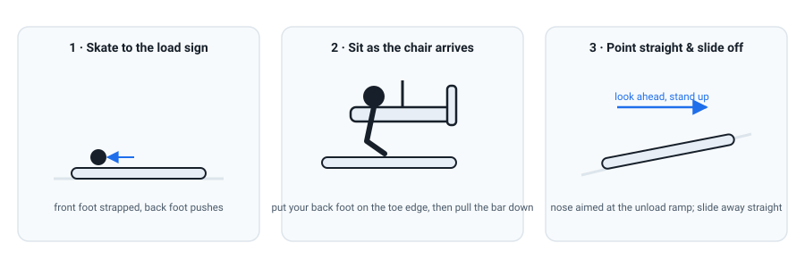

On the Mountain: Speed, Terrain, Lifts & the Group
The skills are yours now. This last lesson is about using them on a real mountain — riding lifts, choosing terrain, controlling speed, and keeping up with your group without ever riding beyond yourself.
Riding the lifts
Lifts are where confidence is lost or won. The good news: it is the same three steps every time, on every mountain.

- Loading: skate to the "wait here" sign, then the "load here" sign. Put your back foot on the toe edge of the board — it makes sitting far easier. Look over your shoulder, sit back as the chair touches you, then drop the safety bar.
- Unloading: stand your board up early, aim the nose straight at the ramp, keep the back foot on the board, look where you're going, and slide away. Do not sit back down.
- Button / surface lifts: let the uplift take you; keep your weight centred and the board flat between your feet. Same principle: look ahead, don't fight it.
- Skating on the flats: back foot out, push like a skateboard, keep weight over the front foot so the board doesn't slide away. This is the same skill you'd rehearse on day one.
Controlling speed on terrain
Your speed tool is not a survival sideslip — it's turn shape and edge angle (Lessons 3 and 7). Widen your turns and finish them more across the slope to slow down; tighten them to carry speed. A few habits worth forming before the trip:
- Ride the right terrain. Start on greens and only move up when you can link turns in control. Your goal is to ride the whole trip, not to impress anyone on day one.
- Never point straight down a pitch you don't know. Look at the run before you commit.
- Use the flats to relax. Keep weight centred and forward, small movements, and let the board run.
- Stop where you're visible. Pull off to the side, not in the middle of the trail or just over a crest.
The Code — know it before you go
Every resort shares one set of rules, Your Responsibility Code, and it is not optional reading (NSAA). The headline points for a newcomer:
- Always stay in control; you must be able to stop or avoid others.
- People ahead or downhill of you have the right of way. You must avoid them.
- Stop only where you're visible from above, and never block traffic.
- Look uphill before you start or merge onto a trail.
The other six cover runaway equipment, signs and closures, being able to use lifts safely, not riding impaired, and swapping details after an incident. Read all ten before your first run (NSAA).
Keeping up with the group — the actual mission
This is what the whole course has been for. Keeping up is not about riding fast; a group on a mountain naturally regroups. It's about not being the one who is lost, hurt, or holding everyone up. Practical tactics:
- Agree a plan. Before the first lift: which runs, where you'll meet, and what time you'll stop for lunch. Mountains are big; phones die.
- Ride within your ability, always. Peer pressure on a mountain is the single biggest cause of a ruined trip. It is completely fine to say "I'll meet you at the bottom" and take the green.
- Never follow someone onto terrain you're not sure of. Let them go first; you can ride the easier line and meet them below.
- Stop before you're exhausted. Fatigue turns good riders into beginners. Rest at the top of runs, hydrate, and take the last run before you're tired — most injuries happen on the last run of the day.
- Look after each other. Keep an eye on the least experienced rider (that might be you), and never leave anyone on the mountain alone.
- Practise the lift at the dome. Button lifts and chairlifts are the same everywhere. Do it ten times until loading and unloading is boring.
- Rehearse the trip plan. Where are you going, roughly when, and who else is coming? Knowing this lets you pick the right runs and gear.
- Check your kit. Helmet, waterproof gloves, water, one snack. Gloves and eye protection are the two things beginners forget and most regret.
- Read the Code out loud once. Ten points, two minutes, and it will stop you being surprised on the hill.
Check your understanding
1. Before sitting on the chairlift, put your back foot…
Resting the back foot on the toe edge gives you a stable platform to sit onto. Once on the ramp at the top, point the nose straight and slide off with the back foot still on the board.
2. As you reach the top, point your board…
The nose aims straight at the unload ramp. Stand up as the chair arrives, keep the back foot on the board, look ahead, and slide away — don't sit back down.
3. Whose right of way does the Code protect?
People ahead or downhill of you have the right of way — you must avoid them. It makes sense: the uphill rider can see the downhill rider, but not the other way round.
4. The best way to keep up with the group is to…
Groups regroup on the mountain. The rider who keeps up is the one who rides in control and meets everyone at the bottom — not the one who chases terrain beyond them and gets hurt.
Watch it, don't just read it
- How to Snowboard: A Beginner's Guide — Part 3 PSIA-AASI · the chairlift, from skating to the load sign to unloading safely.
- Your Responsibility Code (all 10 points) NSAA · two minutes, and it will keep you and everyone around you safer.
- Snowboard Pro Camp Ex-Whistler instructor · practical mountain-day tips for beginners.

Watch the AASI/PSIA Beginner's Guide to Snowboarding, Part 3 (YouTube) for the lifts, and read Your Responsibility Code at NSAA before your first run. Between them, they cover everything this lesson does from the authorities themselves.
Your teacher is right here
Planning the trip? Tell me the resort and dates and I'll help you pick which runs to aim for and how to pace the days. Nervous about a particular lift or run? Describe it — most anxiety is a solved problem once it's named. And when you're back, tell me how it went; that's the wisdom part, and it's where the next course would begin.
Snowboarding Fundamentals · lessons/0008-on-the-mountain.html